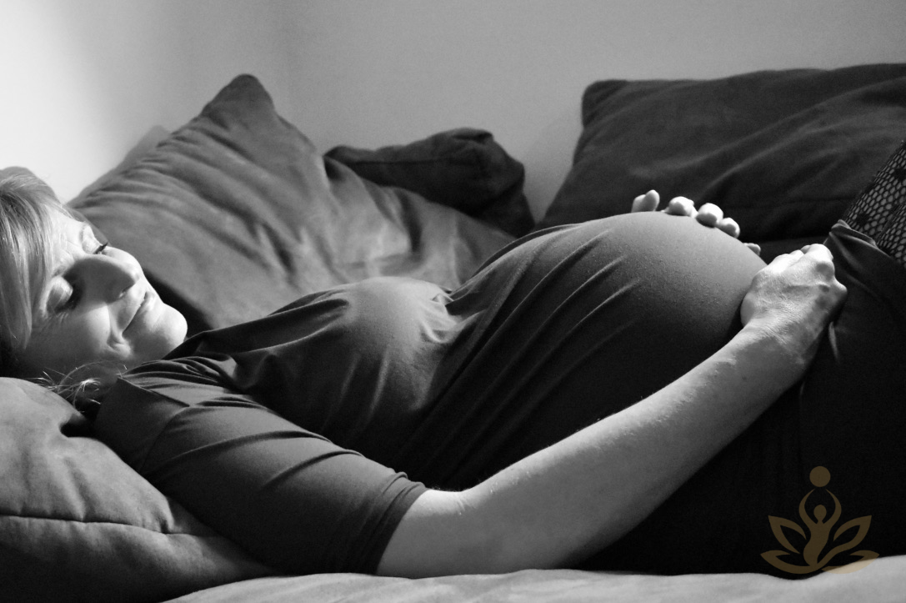
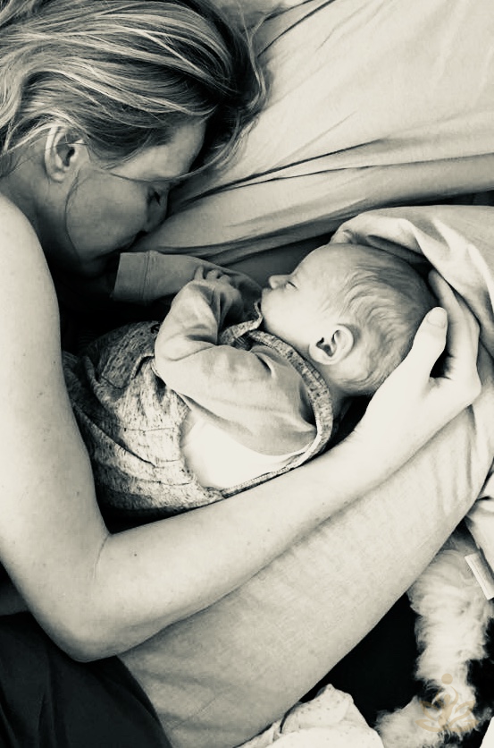

ACHTSAM BEGLEITET · VON ANFANG AN
Schwangerschaft, Geburt & Baby
Getragen sein. Vertrauen finden. Gemeinsam ankommen.
Wenn neues Leben wächst, verändert sich vieles. Dein Körper, deine Gefühle, deine Beziehungen und der Blick auf das, was vor dir liegt. Vorfreude und Vertrauen dürfen dabei ebenso ihren Platz haben wie Fragen, Unsicherheit oder das Bedürfnis nach Ruhe.
Ich begleite dich in dieser besonderen Lebensphase mit achtsamer Körperarbeit, persönlicher Zuwendung und einem offenen Ohr für das, was dich bewegt – während der Schwangerschaft, rund um die Geburt und in der ersten Zeit mit deinem Baby.
Während der Schwangerschaft
Ein Raum für dich und die Verbindung zu deinem werdenden Kind. Mit Shiatsu, Gesprächen und meinen ganzheitlichen Zugängen richte ich mich nach deinem Befinden und dem, was gerade Aufmerksamkeit braucht.
Du darfst innehalten, deinen Körper bewusst wahrnehmen und deinen eigenen Bedürfnissen nachspüren. Berührung, Position und Tempo stimmen wir individuell auf dich ab.

Rund um die Geburt
Auch deine Gedanken, Wünsche und Gefühle zur Geburt dürfen Raum bekommen. Ich begleite dich dabei, deine eigenen Ressourcen wahrzunehmen und herauszufinden, was dir Halt und Vertrauen gibt.
Nach persönlicher Absprache ist auch eine Geburtsbegleitung möglich. Gemeinsam klären wir frühzeitig, wie du dir meine Unterstützung wünschst und welcher Rahmen dafür passend ist.
Im Wochenbett und danach
Nach der Geburt beginnt ein neues Kennenlernen – deines Babys, deines veränderten Körpers und eures gemeinsamen Alltags. Auch du darfst in dieser Zeit Zuwendung erfahren.
Ich gebe Raum für dein Befinden, für Ruhe und für das, was du erlebt hast. Ebenso findet dein Baby mit seinen Bedürfnissen und seinem eigenen Rhythmus Platz in meiner Begleitung. Achtsame Berührung und Körperwahrnehmung können euch beim gemeinsamen Ankommen begleiten.

So individuell wie du und dein Baby
Ich verbinde meine langjährige Erfahrung mit Einfühlungsvermögen und einer feinen Wahrnehmung für eure jeweilige Situation. Welche meiner Zugänge einfließen, entsteht aus dem, was ihr gerade braucht.
Du musst nicht alles schon wissen oder können. Du und dein Baby dürft euren eigenen Weg finden.
Umfang und Rahmen der Begleitung besprechen wir persönlich.
Persönliche Begleitung in Enzelsdorf bei Graz: im Hausboot & an der Seebühne, Murbergstraße 194, sowie im Seminarhaus am Eckhof, Murbergstraße 155, 8072 Enzelsdorf. Termine nach Vereinbarung.
Begleitung für dich und dein Baby anfragen ↗Meine Begleitung ergänzt die Betreuung durch Hebamme und Ärztin oder Arzt. Sie ersetzt keine medizinische oder geburtshilfliche Versorgung.
Zurück zur Angebotsübersicht